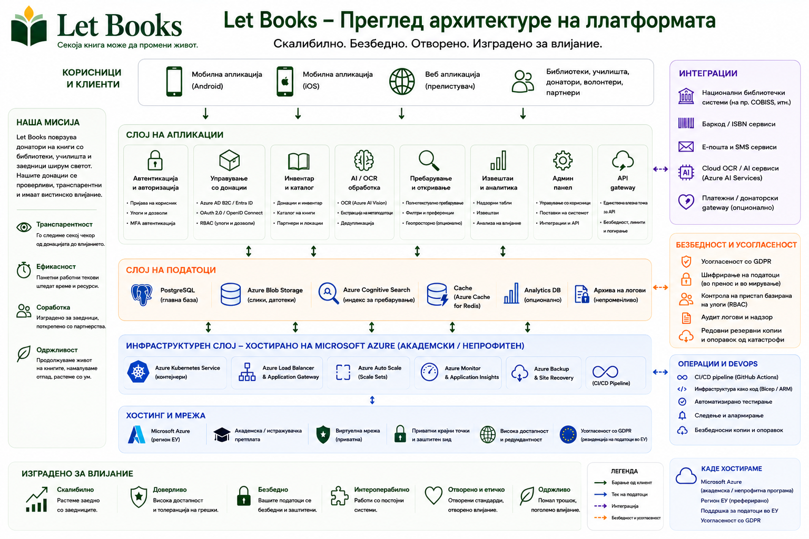

Примерите за хостирање и управување го опишуваат правецот на архитектурата и правилата, но не значат сертифицирани имплементации или постојни продукциски одговорности.
Водич за администратори
Усогласете ги пристапот, приватноста и логистиката уште од почеток.
Let Books мора да биде корисен за приватен донатор, здружение или иден институционален домаќин. Администраторите затоа имаат потреба од јасни правила за корисници, tenants, улоги, локации и необврзна употреба на AI.

Со што управуваат администраторите
- Одобрен пристап и членства
- Tenants и улоги
- Структура на локации и текови на донации
- Граници на приватност и ревизија
- Необврзни AI, OCR и преведувачки поставки
Што треба да се избегнува
- Пристап што се потпира само на надворешна најава
- Јавно откривање на точни локации за складирање
- Задолжителен платен AI во основните текови на работа
- Мешање на физичкиот примерок со чисти метаподатоци
Модел на пристап
Автентикацијата може да доаѓа од надворешни даватели на идентитет, но авторизацијата мора да остане под управување на апликацијата.
Одобрени најави
Раните или приватните имплементации треба да го ограничат пристапот на однапред одобрени корисници.
Членства во tenants
Ист корисник може да учествува во повеќе tenants со различни улоги.
Видливост според улога
Рецензентите не смеат автоматски да ги гледаат приватните белешки и деталите од домот на донаторот.
Приватност и управување
Точните локации, приватните белешки и контакт-податоците треба да останат ограничени. Извозот, увозот, промените на улоги и идните AI барања мора да бидат евидентирани.
Правец на имплементација
Платформата мора да работи за една приватна имплементација, но да остане отворена за подоцнежно институционално или самостојно хостирање со складирање независно од добавувачот.
Пример: Здружение го користи Let Books за повеќе локални донатори и партнерски библиотеки. Еден администратор одобрува пристап, секој донатор има свој tenant, а OCR останува исклучен додека не постои буџет за него.